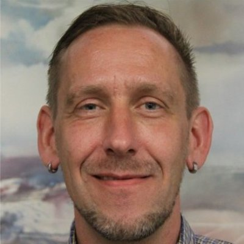

Judges
 |
Dr Jens Klump (Chair) I'm the CSIRO Science Leader for Earth Science Informatics. I'm interested in data driven science, including simulation, remotely operated instruments, and high performance and cloud computing. I also work with organizations like ANDS on long-term preservation of research data, and I can help you find some of the more interesting datasets in the Research Data Australia and CSIRO data archives. I'm on twitter @snet_jklump, or send me an email: jens.klump@csiro.au. |
 |
Dr Peter Löwe Peter is a physical Geographer. He learned the ropes of GIS at UT Austin in 1994 and ventured into FOSS GIS during his PhD study (Radar meteorology/Soil Erosion in South Africa, which relied heavily on GRASS GIS and for which he received several awards. Following his PhD he founded GEOMANCERS.net (now: GISIX.com), producing GISIX, the first portable FOSSGIS workbench based on a live-Linux CD/DVD. He also worked as a Ranger in the UNESCO Geopark Bergstrasse-Odenwald (south of Frankfurt a.M., Germany), developing prototype WebGIS-solutions and Globe-Browser interfaces for the trail network. He actively advocates FOSSGIS in Science in the Earth and Space Informatics (ESSI) chapters of both the European Geoscience Union (EGU) and the American Geophysical Union (AGU) and has been organizing OSGeo Townhall events at the annual EGU General Assembly since 2014. Since 2015 he is a member of the OSGeo Open Geoscience Committee. For the development of early warning systems, triggered by the Sumatra Tsunami of 2004, he joined the National German Research Centre for Geosciences (GFZ) in Potsdam in 2006. After a two-year excursion into the remote sensing satellite industry (Rapideye AG) he returned to GFZ for work at the Centre for Geoinformation Technology in 2011. His work focused on project management, large scale computing on the GFZ High Performance Cluster and data visualisation, including3D Printing. In 2013 Peter joined the German National Library for Science and Technology (TIB Hannover) as head of the library’s development department), while continuing to support FOSS GIS for High Performance Computing / Big Data. |
Dr Mingfang Wu Dr. Mingfang Wu is a Senior Business Analyst at ANDS. She has worked on a variety of ANDS projects including Seeding of Commons, Data Capture, Data Applications, and eResearch Infrastructure Connectivity. She received her PhD from RMIT University in 2002 with the research topic on Organisation of Search Results for Interactive Question Answering. She was a Research Scientist at CSIRO (1999 – 2006) and a Research Fellow at RMIT (2006 – 2011), with research focusing on the design and evaluation of systems that support interactive information retrieval and personalised information delivery. She has published over 50 research papers in peer-reviewed journals and conferences. She was the receiver of the Beyond Search and Semantic Computing and Internet Economics Awards from Microsoft Research in 2008, and the RMIT Industry Placement Award in 2010. |